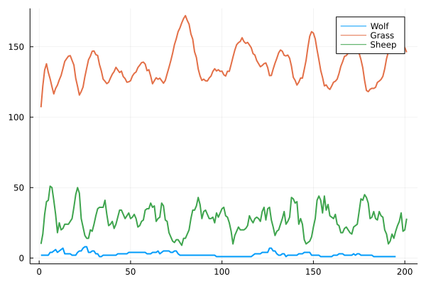

Lab 2: Predator-Prey Agents
In the next labs you will implement your own predator-prey model. The model will contain wolves, sheep, and - to feed your sheep - some grass. The final simulation will be turn-based and the agents will be able to eat each other, reproduce, and die in every iteration. At every iteration of the simulation each agent will step forward in time via the agent_step! function. The steps for the agent_step! methods of animals and plants are written below in pseudocode.
# for animals:
agent_step!(animal, world)
decrement energy by 1
find & eat food (with probability pf)
die if no more energy
reproduce (with probability pr)
# for plants:
agent_step!(plant, world)
grow if not at maximum sizeThe world in which the agents live will be the simplest possible world with zero dimensions (i.e. a Dict of ID=>Agent). Running and plotting your final result could look something like the plot below.

We will start implementing the basic functionality for each Agent like eat!ing, reproduce!ing, and a very simplistic World for your agents to live in. In the next lab you will refine both the type hierarchy of your Agents, as well as the design of the World in order to leverage the power of Julia's type system and compiler.
We start with a very basic type hierarchy:
abstract type Agent end
abstract type Animal <: Agent end
abstract type Plant <: Agent endWe will implement the World for our Agents later, but it will essentially be implemented by a Dict which maps unique IDs to an Agent. Hence, every agent will need an ID.
The Grass Agent
Let's start by implementing some Grass which will later be able to grow during each iteration of our simulation.
- Define a mutable
structcalledGrasswhich is a subtype ofPlanthas the fieldsid(the unique identifier of thisAgent- every agent needs one!),size(the current size of theGrass), andmax_size. All fields should be integers. - Define a constructor for
Grasswhich, given only an ID and a maximum size $m$, will create an instance ofGrassthat has a randomly initialized size in the range $[1,m]$. It should also be possible to createGrass, just with an ID and a defaultmax_sizeof10. - Implement
Base.show(io::IO, g::Grass)to get custom printing of yourGrasssuch that theGrassis displayed with its size in percent of itsmax_size.
Hint: You can implement a custom show method for a new type MyType like this:
struct MyType
x::Bool
end
Base.show(io::IO, a::MyType) = print(io, "MyType $(a.x)")Solution:
Since Julia 1.8 we can also declare some fields of mutable structs as const, which can be used both to prevent us from mutating immutable fields (such as the ID) but can also be used by the compiler in certain cases.
mutable struct Grass <: Plant
const id::Int
size::Int
const max_size::Int
end
Grass(id,m=10) = Grass(id, rand(1:m), m)
function Base.show(io::IO, g::Grass)
x = g.size/g.max_size * 100
# hint: to type the leaf in the julia REPL you can do:
# \:herb:<tab>
print(io,"🌿 #$(g.id) $(round(Int,x))% grown")
endCreating a few Grass agents can then look like this:
julia> Grass(1,5)🌿 #1 40% grownjulia> g = Grass(2)🌿 #2 60% grownjulia> g.id = 5ERROR: setfield!: const field .id of type Grass cannot be changed
Sheep and Wolf Agents
Animals are slightly different from plants. They will have an energy $E$, which will be increase (or decrease) if the agent eats (or reproduces) by a certain amount $\Delta E$. Later we will also need a probability to find food $p_f$ and a probability to reproduce $p_r$.c
- Define two mutable structs
SheepandWolfthat are subtypes ofAnimaland have the fieldsid,energy,Δenergy,reprprob, andfoodprob. - Define constructors with the following default values:
- For 🐑: $E=4$, $\Delta E=0.2$, $p_r=0.8$, and $p_f=0.6$.
- For 🐺: $E=10$, $\Delta E=8$, $p_r=0.1$, and $p_f=0.2$.
- Overload
Base.showto get pretty printing for your two new animals.
Solution:
Solution for Sheep
mutable struct Sheep <: Animal
id::Int
energy::Float64
Δenergy::Float64
reprprob::Float64
foodprob::Float64
end
Sheep(id, e=4.0, Δe=0.2, pr=0.8, pf=0.6) = Sheep(id,e,Δe,pr,pf)
function Base.show(io::IO, s::Sheep)
e = s.energy
d = s.Δenergy
pr = s.reprprob
pf = s.foodprob
print(io,"🐑 #$(s.id) E=$e ΔE=$d pr=$pr pf=$pf")
endSolution for Wolf:
mutable struct Wolf <: Animal
const id::Int
energy::Float64
const Δenergy::Float64
const reprprob::Float64
const foodprob::Float64
end
Wolf(id, e=10.0, Δe=8.0, pr=0.1, pf=0.2) = Wolf(id,e,Δe,pr,pf)
function Base.show(io::IO, w::Wolf)
e = w.energy
d = w.Δenergy
pr = w.reprprob
pf = w.foodprob
print(io,"🐺 #$(w.id) E=$e ΔE=$d pr=$pr pf=$pf")
endjulia> Sheep(4)🐑 #4 E=4.0 ΔE=0.2 pr=0.8 pf=0.6julia> Wolf(5)🐺 #5 E=10.0 ΔE=8.0 pr=0.1 pf=0.2
The World
Before our agents can eat or reproduce we need to build them a World. The simplest (and as you will later see, somewhat suboptimal) world is essentially a Dict from IDs to agents. Later we will also need the maximum ID, lets define a world with two fields:
mutable struct World{A<:Agent}
agents::Dict{Int,A}
max_id::Int
endImplement a constructor for the World which accepts a vector of Agents.
Solution:
function World(agents::Vector{<:Agent})
max_id = maximum(a.id for a in agents)
World(Dict(a.id=>a for a in agents), max_id)
end
# optional: overload Base.show
function Base.show(io::IO, w::World)
println(io, typeof(w))
for (_,a) in w.agents
println(io," $a")
end
endSheep eats Grass
We can implement the behaviour of our various agents with respect to each other by leveraging Julia's multiple dispatch.
Implement a function eat!(::Sheep, ::Grass, ::World) which increases the sheep's energy by $\Delta E$ multiplied by the size of the grass.
After the sheep's energy is updated the grass is eaten and its size counter has to be set to zero.
Note that you do not yet need the world in this function. It is needed later for the case of wolves eating sheep.
Solution:
function eat!(sheep::Sheep, grass::Grass, w::World)
sheep.energy += grass.size * sheep.Δenergy
grass.size = 0
endBelow you can see how a fully grown grass is eaten by a sheep. The sheep's energy changes size of the grass is set to zero.
julia> grass = Grass(1)🌿 #1 40% grownjulia> sheep = Sheep(2)🐑 #2 E=4.0 ΔE=0.2 pr=0.8 pf=0.6julia> world = World([grass, sheep])Main.World{Main.Agent} 🐑 #2 E=4.0 ΔE=0.2 pr=0.8 pf=0.6 🌿 #1 40% grownjulia> eat!(sheep,grass,world);julia> worldMain.World{Main.Agent} 🐑 #2 E=4.8 ΔE=0.2 pr=0.8 pf=0.6 🌿 #1 0% grown
Note that the order of the arguments has a meaning here. Calling eat!(grass,sheep,world) results in a MethodError which is great, because Grass cannot eat Sheep.
julia> eat!(grass,sheep,world);ERROR: MethodError: no method matching eat!(::Main.Grass, ::Main.Sheep, ::Main.World{Main.Agent}) Closest candidates are: eat!(::Main.Sheep, ::Main.Grass, ::Main.World) at lab.md:249
Wolf eats Sheep
The eat! method for wolves increases the wolf's energy by sheep.energy * wolf.Δenergy and kills the sheep (i.e. removes the sheep from the world). There are other situationsin which agents die , so it makes sense to implement another function kill_agent!(::Animal,::World).
Hint: You can use delete! to remove agents from the dictionary in your world.
Solution:
function eat!(wolf::Wolf, sheep::Sheep, w::World)
wolf.energy += sheep.energy * wolf.Δenergy
kill_agent!(sheep,w)
end
kill_agent!(a::Agent, w::World) = delete!(w.agents, a.id)With a correct eat! method you should get results like this:
julia> grass = Grass(1);julia> sheep = Sheep(2);julia> wolf = Wolf(3);julia> world = World([grass, sheep, wolf])Main.World{Main.Agent} 🐑 #2 E=4.0 ΔE=0.2 pr=0.8 pf=0.6 🐺 #3 E=10.0 ΔE=8.0 pr=0.1 pf=0.2 🌿 #1 100% grownjulia> eat!(wolf,sheep,world);julia> worldMain.World{Main.Agent} 🐺 #3 E=42.0 ΔE=8.0 pr=0.1 pf=0.2 🌿 #1 100% grown
The sheep is removed from the world and the wolf's energy increased by $\Delta E$.
Reproduction
Currently our animals can only eat. In our simulation we also want them to reproduce. We will do this by adding a reproduce! method to Animal.
Write a function reproduce! that takes an Animal and a World. Reproducing will cost an animal half of its energy and then add an almost identical copy of the given animal to the world. The only thing that is different from parent to child is the ID. You can simply increase the max_id of the world by one and use that as the new ID for the child.
Solution:
function reproduce!(a::Animal, w::World)
a.energy = a.energy/2
new_id = w.max_id + 1
â = deepcopy(a)
â.id = new_id
w.agents[â.id] = â
w.max_id = new_id
endYou can avoid mutating the id field (which could be considered bad practice) by reconstructing the child from scratch:
function reproduce!(a::A, w::World) where A<:Animal
a.energy = a.energy/2
a_vals = [getproperty(a,n) for n in fieldnames(A) if n!=:id]
new_id = w.max_id + 1
â = A(new_id, a_vals...)
w.agents[â.id] = â
w.max_id = new_id
endjulia> s1, s2 = Sheep(1), Sheep(2)(🐑 #1 E=4.0 ΔE=0.2 pr=0.8 pf=0.6, 🐑 #2 E=4.0 ΔE=0.2 pr=0.8 pf=0.6)julia> w = World([s1, s2])Main.World{Main.Sheep} 🐑 #2 E=4.0 ΔE=0.2 pr=0.8 pf=0.6 🐑 #1 E=4.0 ΔE=0.2 pr=0.8 pf=0.6julia> reproduce!(s1, w);julia> wMain.World{Main.Sheep} 🐑 #2 E=4.0 ΔE=0.2 pr=0.8 pf=0.6 🐑 #3 E=2.0 ΔE=0.2 pr=0.8 pf=0.6 🐑 #1 E=2.0 ΔE=0.2 pr=0.8 pf=0.6